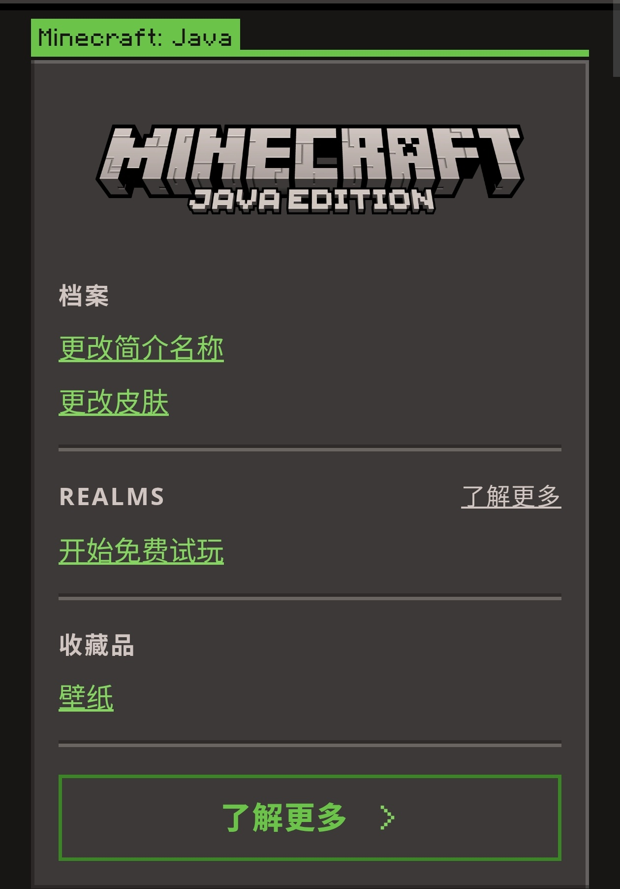

MineCraft账号指南
事先声明:本文可以解决95%的问题,若您的问题没有解决说明此问题不在服务范围之内
1.如何验号

2.检查hypixel等级情况
使用群机器人@rick /hyp <玩家id> [请手动输入请勿复制]
3.如何改绑
商家在你购买账号后会发给你一串邮箱+恢复代码组合,格式如下:
示例邮箱:amzmfaxxx@outlook.com
示例代码:XXXXX-XXXXX-XXXXX-XXXXX-XXXXX
选择我没有其中任何一项 选择恢复代码改绑邮箱
4.关于售后
售后服务全部默认14天,若购买了永久请联系售后单独私聊
需要售后时请私聊群主
提供购买截图+购买日期,48小时内会有所回复
注:虚拟商品没有退款途径 望理解